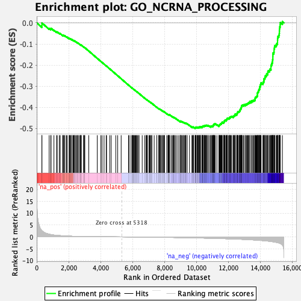
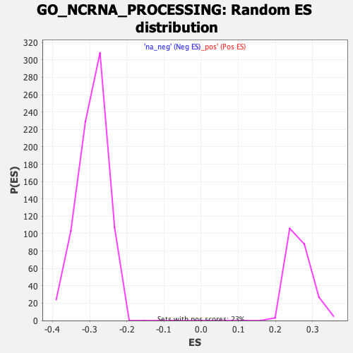

| | | Dataset | DE_genes |
| Phenotype | NoPhenotypeAvailable |
| Upregulated in class | na_neg |
| GeneSet | GO_NCRNA_PROCESSING |
| Enrichment Score (ES) | -0.49918658 |
| Normalized Enrichment Score (NES) | -1.7078966 |
| Nominal p-value | 0.0 |
| FDR q-value | 0.07599975 |
| FWER p-Value | 0.593 |
Table: GSEA Results Summary

Fig 1: Enrichment plot: GO_NCRNA_PROCESSING
Profile of the Running ES Score & Positions of GeneSet Members on the Rank Ordered List
| PROBE | GENE SYMBOL | GENE_TITLE | RANK IN GENE LIST | RANK METRIC SCORE | RUNNING ES | CORE ENRICHMENT | | 1 | USB1 | | | 324 | 2.618 | -0.0110 | No |
| 2 | NOP10 | | | 325 | 2.613 | -0.0007 | No |
| 3 | ERI1 | | | 778 | 1.144 | -0.0260 | No |
| 4 | ZBTB8OS | | | 880 | 1.000 | -0.0287 | No |
| 5 | TRMT10A | | | 897 | 0.988 | -0.0258 | No |
| 6 | TRMT1L | | | 1078 | 0.772 | -0.0347 | No |
| 7 | CDKAL1 | | | 1242 | 0.649 | -0.0428 | No |
| 8 | MTFMT | | | 1283 | 0.622 | -0.0430 | No |
| 9 | ADAR | | | 1411 | 0.563 | -0.0492 | No |
| 10 | ADAT1 | | | 1473 | 0.531 | -0.0511 | No |
| 11 | TSEN34 | | | 1624 | 0.463 | -0.0592 | No |
| 12 | RPS24 | | | 1652 | 0.452 | -0.0592 | No |
| 13 | ZNHIT6 | | | 1668 | 0.447 | -0.0584 | No |
| 14 | EXOSC3 | | | 1730 | 0.415 | -0.0608 | No |
| 15 | RPL35A | | | 1767 | 0.401 | -0.0615 | No |
| 16 | RRP15 | | | 1864 | 0.364 | -0.0664 | No |
| 17 | RPS21 | | | 1904 | 0.353 | -0.0676 | No |
| 18 | AGO3 | | | 2033 | 0.317 | -0.0748 | No |
| 19 | CSTF2 | | | 2034 | 0.317 | -0.0736 | No |
| 20 | POP4 | | | 2062 | 0.307 | -0.0741 | No |
| 21 | DIMT1 | | | 2105 | 0.296 | -0.0757 | No |
| 22 | C2orf49 | | | 2135 | 0.285 | -0.0765 | No |
| 23 | POP1 | | | 2203 | 0.266 | -0.0799 | No |
| 24 | LCMT2 | | | 2211 | 0.264 | -0.0793 | No |
| 25 | RPP40 | | | 2282 | 0.247 | -0.0829 | No |
| 26 | RCL1 | | | 2322 | 0.240 | -0.0846 | No |
| 27 | FAM98B | | | 2343 | 0.234 | -0.0849 | No |
| 28 | RPL26 | | | 2347 | 0.233 | -0.0842 | No |
| 29 | CTU2 | | | 2417 | 0.222 | -0.0879 | No |
| 30 | DDX10 | | | 2472 | 0.214 | -0.0906 | No |
| 31 | TRUB1 | | | 2531 | 0.204 | -0.0936 | No |
| 32 | RPS27 | | | 2559 | 0.198 | -0.0946 | No |
| 33 | TPRKB | | | 2603 | 0.190 | -0.0967 | No |
| 34 | KRR1 | | | 2681 | 0.179 | -0.1011 | No |
| 35 | CTU1 | | | 2750 | 0.168 | -0.1049 | No |
| 36 | ELAC1 | | | 2751 | 0.168 | -0.1043 | No |
| 37 | PA2G4 | | | 2752 | 0.168 | -0.1036 | No |
| 38 | TRMT13 | | | 2791 | 0.164 | -0.1055 | No |
| 39 | TYW1 | | | 2936 | 0.146 | -0.1144 | No |
| 40 | METTL6 | | | 2944 | 0.145 | -0.1143 | No |
| 41 | NSA2 | | | 2988 | 0.141 | -0.1165 | No |
| 42 | RPF2 | | | 3011 | 0.138 | -0.1175 | No |
| 43 | EMG1 | | | 3258 | 0.116 | -0.1332 | No |
| 44 | NOL11 | | | 3789 | 0.082 | -0.1679 | No |
| 45 | TRMT10B | | | 4014 | 0.069 | -0.1824 | No |
| 46 | PIH1D2 | | | 4088 | 0.065 | -0.1870 | No |
| 47 | BTRC | | | 4214 | 0.057 | -0.1950 | No |
| 48 | FCF1 | | | 4349 | 0.050 | -0.2036 | No |
| 49 | WDR3 | | | 4374 | 0.049 | -0.2050 | No |
| 50 | ELP6 | | | 4569 | 0.038 | -0.2177 | No |
| 51 | SHQ1 | | | 4661 | 0.034 | -0.2236 | No |
| 52 | POLR3K | | | 4952 | 0.019 | -0.2426 | No |
| 53 | MPHOSPH6 | | | 5071 | 0.012 | -0.2504 | No |
| 54 | RPUSD1 | | | 5286 | 0.002 | -0.2645 | No |
| 55 | RPL27 | | | 5754 | -0.023 | -0.2952 | No |
| 56 | AGO2 | | | 5782 | -0.025 | -0.2969 | No |
| 57 | BCDIN3D | | | 5903 | -0.032 | -0.3047 | No |
| 58 | RPL11 | | | 5981 | -0.038 | -0.3097 | No |
| 59 | THADA | | | 5992 | -0.039 | -0.3102 | No |
| 60 | DDX49 | | | 5999 | -0.039 | -0.3104 | No |
| 61 | DPH3 | | | 6036 | -0.042 | -0.3126 | No |
| 62 | ERCC2 | | | 6046 | -0.042 | -0.3130 | No |
| 63 | TRMT6 | | | 6097 | -0.046 | -0.3162 | No |
| 64 | EXOSC5 | | | 6132 | -0.048 | -0.3182 | No |
| 65 | THUMPD2 | | | 6160 | -0.050 | -0.3198 | No |
| 66 | ISG20 | | | 6203 | -0.053 | -0.3224 | No |
| 67 | INTS9 | | | 6252 | -0.056 | -0.3253 | No |
| 68 | TRMT10C | | | 6268 | -0.057 | -0.3261 | No |
| 69 | DDX27 | | | 6321 | -0.060 | -0.3293 | No |
| 70 | PRKRA | | | 6393 | -0.065 | -0.3337 | No |
| 71 | RSL1D1 | | | 6402 | -0.065 | -0.3340 | No |
| 72 | NSUN6 | | | 6604 | -0.081 | -0.3469 | No |
| 73 | NHP2 | | | 6755 | -0.092 | -0.3565 | No |
| 74 | ADAT3 | | | 6840 | -0.098 | -0.3616 | No |
| 75 | RPP38 | | | 6860 | -0.099 | -0.3625 | No |
| 76 | EXOSC9 | | | 6900 | -0.103 | -0.3646 | No |
| 77 | UTP14A | | | 6902 | -0.103 | -0.3643 | No |
| 78 | RRNAD1 | | | 6929 | -0.105 | -0.3656 | No |
| 79 | GAR1 | | | 7027 | -0.113 | -0.3716 | No |
| 80 | ALKBH1 | | | 7062 | -0.115 | -0.3733 | No |
| 81 | RPS15 | | | 7097 | -0.118 | -0.3751 | No |
| 82 | UTP15 | | | 7129 | -0.121 | -0.3767 | No |
| 83 | RPF1 | | | 7197 | -0.127 | -0.3806 | No |
| 84 | CLP1 | | | 7211 | -0.128 | -0.3810 | No |
| 85 | BOP1 | | | 7354 | -0.141 | -0.3898 | No |
| 86 | RPS7 | | | 7518 | -0.153 | -0.3999 | No |
| 87 | TYW3 | | | 7522 | -0.154 | -0.3995 | No |
| 88 | C9orf64 | | | 7640 | -0.165 | -0.4066 | No |
| 89 | RPP14 | | | 7649 | -0.166 | -0.4065 | No |
| 90 | RRS1 | | | 7688 | -0.170 | -0.4083 | No |
| 91 | RPP30 | | | 7700 | -0.171 | -0.4084 | No |
| 92 | RPL35 | | | 7729 | -0.173 | -0.4095 | No |
| 93 | DDX21 | | | 7780 | -0.177 | -0.4121 | No |
| 94 | HELQ | | | 7847 | -0.184 | -0.4157 | No |
| 95 | RIOK1 | | | 7867 | -0.186 | -0.4163 | No |
| 96 | LSM6 | | | 7924 | -0.191 | -0.4192 | No |
| 97 | FDXACB1 | | | 7970 | -0.195 | -0.4214 | No |
| 98 | NOL9 | | | 7989 | -0.197 | -0.4218 | No |
| 99 | NVL | | | 7993 | -0.197 | -0.4212 | No |
| 100 | TRPT1 | | | 8141 | -0.213 | -0.4301 | No |
| 101 | UTP23 | | | 8216 | -0.219 | -0.4341 | No |
| 102 | IMP3 | | | 8236 | -0.222 | -0.4345 | No |
| 103 | MRPS11 | | | 8269 | -0.226 | -0.4357 | No |
| 104 | DDX52 | | | 8274 | -0.226 | -0.4351 | No |
| 105 | DUS1L | | | 8276 | -0.227 | -0.4342 | No |
| 106 | PUS7 | | | 8292 | -0.229 | -0.4343 | No |
| 107 | SUV39H1 | | | 8322 | -0.231 | -0.4353 | No |
| 108 | INTS6 | | | 8411 | -0.241 | -0.4402 | No |
| 109 | INTS8 | | | 8484 | -0.249 | -0.4439 | No |
| 110 | OSGEPL1 | | | 8529 | -0.254 | -0.4458 | No |
| 111 | DDX17 | | | 8575 | -0.259 | -0.4478 | No |
| 112 | PUSL1 | | | 8581 | -0.260 | -0.4471 | No |
| 113 | SMAD2 | | | 8632 | -0.265 | -0.4493 | No |
| 114 | FRG1 | | | 8677 | -0.271 | -0.4512 | No |
| 115 | TRNT1 | | | 8771 | -0.282 | -0.4562 | No |
| 116 | EXOSC1 | | | 8861 | -0.293 | -0.4609 | No |
| 117 | NPM3 | | | 8967 | -0.305 | -0.4666 | No |
| 118 | NSUN3 | | | 8989 | -0.309 | -0.4668 | No |
| 119 | AGO4 | | | 8990 | -0.309 | -0.4656 | No |
| 120 | DGCR8 | | | 8996 | -0.309 | -0.4647 | No |
| 121 | TRMT112 | | | 9056 | -0.318 | -0.4673 | No |
| 122 | NAF1 | | | 9074 | -0.320 | -0.4672 | No |
| 123 | TARBP1 | | | 9124 | -0.326 | -0.4691 | No |
| 124 | TSEN15 | | | 9176 | -0.331 | -0.4712 | No |
| 125 | TSEN2 | | | 9187 | -0.334 | -0.4705 | No |
| 126 | TYW5 | | | 9259 | -0.342 | -0.4738 | No |
| 127 | DDX18 | | | 9299 | -0.347 | -0.4750 | No |
| 128 | RPS2 | | | 9313 | -0.348 | -0.4745 | No |
| 129 | YBEY | | | 9325 | -0.350 | -0.4738 | No |
| 130 | DUS4L | | | 9403 | -0.359 | -0.4775 | No |
| 131 | CDK5RAP1 | | | 9412 | -0.360 | -0.4766 | No |
| 132 | SSB | | | 9564 | -0.383 | -0.4851 | No |
| 133 | ANKRD16 | | | 9720 | -0.407 | -0.4937 | No |
| 134 | EXOSC6 | | | 9733 | -0.408 | -0.4929 | No |
| 135 | RPS8 | | | 9787 | -0.415 | -0.4947 | No |
| 136 | EXOSC2 | | | 9801 | -0.418 | -0.4939 | No |
| 137 | TRMT5 | | | 9812 | -0.419 | -0.4929 | No |
| 138 | NOB1 | | | 9908 | -0.433 | -0.4975 | Yes |
| 139 | GTPBP3 | | | 9935 | -0.438 | -0.4975 | Yes |
| 140 | INTS4 | | | 9940 | -0.438 | -0.4960 | Yes |
| 141 | NGDN | | | 9961 | -0.441 | -0.4956 | Yes |
| 142 | TYW1B | | | 9964 | -0.442 | -0.4939 | Yes |
| 143 | ALKBH8 | | | 9984 | -0.444 | -0.4934 | Yes |
| 144 | THUMPD3 | | | 10047 | -0.454 | -0.4957 | Yes |
| 145 | SBDS | | | 10054 | -0.455 | -0.4943 | Yes |
| 146 | METTL2B | | | 10095 | -0.461 | -0.4951 | Yes |
| 147 | RPS6 | | | 10101 | -0.462 | -0.4936 | Yes |
| 148 | MOCS3 | | | 10148 | -0.469 | -0.4948 | Yes |
| 149 | TSR2 | | | 10157 | -0.471 | -0.4935 | Yes |
| 150 | TRMT2B | | | 10196 | -0.477 | -0.4941 | Yes |
| 151 | TRDMT1 | | | 10197 | -0.477 | -0.4922 | Yes |
| 152 | GTF2H5 | | | 10256 | -0.484 | -0.4941 | Yes |
| 153 | POP7 | | | 10267 | -0.486 | -0.4928 | Yes |
| 154 | TUT1 | | | 10274 | -0.487 | -0.4913 | Yes |
| 155 | DKC1 | | | 10353 | -0.499 | -0.4945 | Yes |
| 156 | DICER1 | | | 10361 | -0.499 | -0.4930 | Yes |
| 157 | HEATR1 | | | 10374 | -0.501 | -0.4918 | Yes |
| 158 | TFB1M | | | 10386 | -0.503 | -0.4905 | Yes |
| 159 | SMAD3 | | | 10402 | -0.505 | -0.4895 | Yes |
| 160 | RPS16 | | | 10412 | -0.507 | -0.4881 | Yes |
| 161 | METTL1 | | | 10435 | -0.509 | -0.4875 | Yes |
| 162 | XRN2 | | | 10493 | -0.518 | -0.4892 | Yes |
| 163 | UTP14C | | | 10499 | -0.519 | -0.4875 | Yes |
| 164 | WBP11 | | | 10524 | -0.524 | -0.4870 | Yes |
| 165 | DHX37 | | | 10535 | -0.525 | -0.4856 | Yes |
| 166 | UTP18 | | | 10581 | -0.534 | -0.4864 | Yes |
| 167 | DDX54 | | | 10603 | -0.539 | -0.4857 | Yes |
| 168 | RRP1B | | | 10620 | -0.541 | -0.4846 | Yes |
| 169 | HSD17B10 | | | 10660 | -0.547 | -0.4850 | Yes |
| 170 | ELP5 | | | 10722 | -0.556 | -0.4868 | Yes |
| 171 | FTSJ3 | | | 10731 | -0.558 | -0.4852 | Yes |
| 172 | MRM1 | | | 10811 | -0.569 | -0.4881 | Yes |
| 173 | METTL15 | | | 10892 | -0.580 | -0.4911 | Yes |
| 174 | EXOSC10 | | | 10901 | -0.582 | -0.4893 | Yes |
| 175 | NOL10 | | | 10927 | -0.587 | -0.4887 | Yes |
| 176 | ZCCHC4 | | | 10981 | -0.594 | -0.4898 | Yes |
| 177 | RRP8 | | | 11005 | -0.598 | -0.4890 | Yes |
| 178 | RPS14 | | | 11038 | -0.604 | -0.4887 | Yes |
| 179 | ZNHIT3 | | | 11040 | -0.604 | -0.4863 | Yes |
| 180 | TRMT61B | | | 11061 | -0.608 | -0.4853 | Yes |
| 181 | WDR12 | | | 11065 | -0.609 | -0.4830 | Yes |
| 182 | RIOK3 | | | 11078 | -0.611 | -0.4814 | Yes |
| 183 | MRPL1 | | | 11093 | -0.614 | -0.4799 | Yes |
| 184 | RPUSD4 | | | 11133 | -0.622 | -0.4800 | Yes |
| 185 | ELP3 | | | 11137 | -0.623 | -0.4777 | Yes |
| 186 | ERI3 | | | 11184 | -0.632 | -0.4783 | Yes |
| 187 | GEMIN4 | | | 11283 | -0.653 | -0.4822 | Yes |
| 188 | INTS2 | | | 11410 | -0.680 | -0.4878 | Yes |
| 189 | NOP14 | | | 11419 | -0.683 | -0.4856 | Yes |
| 190 | PUS10 | | | 11430 | -0.684 | -0.4836 | Yes |
| 191 | PELP1 | | | 11453 | -0.688 | -0.4823 | Yes |
| 192 | HNRNPA2B1 | | | 11476 | -0.694 | -0.4810 | Yes |
| 193 | DDX1 | | | 11493 | -0.697 | -0.4793 | Yes |
| 194 | CHD7 | | | 11511 | -0.701 | -0.4776 | Yes |
| 195 | TBL3 | | | 11557 | -0.710 | -0.4778 | Yes |
| 196 | METTL16 | | | 11567 | -0.712 | -0.4756 | Yes |
| 197 | UTP3 | | | 11582 | -0.716 | -0.4736 | Yes |
| 198 | RPS19 | | | 11606 | -0.721 | -0.4723 | Yes |
| 199 | INTS12 | | | 11613 | -0.724 | -0.4698 | Yes |
| 200 | INTS5 | | | 11700 | -0.742 | -0.4726 | Yes |
| 201 | NUDT16 | | | 11702 | -0.743 | -0.4697 | Yes |
| 202 | SEPHS2 | | | 11731 | -0.748 | -0.4686 | Yes |
| 203 | ELP4 | | | 11746 | -0.750 | -0.4665 | Yes |
| 204 | WDR36 | | | 11749 | -0.750 | -0.4637 | Yes |
| 205 | RPUSD2 | | | 11766 | -0.755 | -0.4618 | Yes |
| 206 | SRRT | | | 11798 | -0.762 | -0.4608 | Yes |
| 207 | FTSJ1 | | | 11861 | -0.774 | -0.4618 | Yes |
| 208 | DROSHA | | | 11882 | -0.780 | -0.4600 | Yes |
| 209 | PUS3 | | | 11898 | -0.784 | -0.4579 | Yes |
| 210 | THUMPD1 | | | 11906 | -0.787 | -0.4553 | Yes |
| 211 | METTL8 | | | 11927 | -0.791 | -0.4535 | Yes |
| 212 | INTS3 | | | 11938 | -0.793 | -0.4510 | Yes |
| 213 | MRTO4 | | | 12009 | -0.807 | -0.4524 | Yes |
| 214 | MRPL44 | | | 12060 | -0.817 | -0.4525 | Yes |
| 215 | RPP25 | | | 12074 | -0.819 | -0.4501 | Yes |
| 216 | EIF4A3 | | | 12080 | -0.822 | -0.4472 | Yes |
| 217 | MTO1 | | | 12112 | -0.833 | -0.4459 | Yes |
| 218 | DUS3L | | | 12149 | -0.842 | -0.4449 | Yes |
| 219 | RPL5 | | | 12168 | -0.846 | -0.4428 | Yes |
| 220 | LYAR | | | 12221 | -0.859 | -0.4428 | Yes |
| 221 | NOL6 | | | 12306 | -0.879 | -0.4449 | Yes |
| 222 | TP53RK | | | 12317 | -0.882 | -0.4420 | Yes |
| 223 | THG1L | | | 12348 | -0.889 | -0.4405 | Yes |
| 224 | DIS3 | | | 12370 | -0.893 | -0.4383 | Yes |
| 225 | METTL2A | | | 12413 | -0.907 | -0.4375 | Yes |
| 226 | WDR46 | | | 12425 | -0.911 | -0.4346 | Yes |
| 227 | NSUN5 | | | 12428 | -0.912 | -0.4312 | Yes |
| 228 | WDR55 | | | 12519 | -0.933 | -0.4334 | Yes |
| 229 | INTS7 | | | 12534 | -0.937 | -0.4306 | Yes |
| 230 | TRMT1 | | | 12548 | -0.941 | -0.4278 | Yes |
| 231 | NOP58 | | | 12570 | -0.945 | -0.4254 | Yes |
| 232 | WDR18 | | | 12579 | -0.947 | -0.4222 | Yes |
| 233 | SRFBP1 | | | 12604 | -0.954 | -0.4200 | Yes |
| 234 | RPL7 | | | 12668 | -0.972 | -0.4203 | Yes |
| 235 | CPSF4 | | | 12692 | -0.979 | -0.4179 | Yes |
| 236 | SART1 | | | 12718 | -0.987 | -0.4157 | Yes |
| 237 | NOC4L | | | 12727 | -0.990 | -0.4123 | Yes |
| 238 | BYSL | | | 12743 | -0.995 | -0.4093 | Yes |
| 239 | WDR4 | | | 12770 | -1.002 | -0.4071 | Yes |
| 240 | DDX51 | | | 12794 | -1.011 | -0.4046 | Yes |
| 241 | FBL | | | 12803 | -1.013 | -0.4011 | Yes |
| 242 | NOP2 | | | 12818 | -1.016 | -0.3980 | Yes |
| 243 | NOLC1 | | | 12823 | -1.018 | -0.3942 | Yes |
| 244 | TFB2M | | | 12838 | -1.025 | -0.3911 | Yes |
| 245 | UTP20 | | | 12875 | -1.037 | -0.3894 | Yes |
| 246 | RRP9 | | | 12953 | -1.062 | -0.3902 | Yes |
| 247 | RPL10A | | | 12973 | -1.068 | -0.3873 | Yes |
| 248 | WDR43 | | | 13061 | -1.094 | -0.3887 | Yes |
| 249 | REXO4 | | | 13071 | -1.097 | -0.3849 | Yes |
| 250 | AARS2 | | | 13132 | -1.114 | -0.3845 | Yes |
| 251 | NSUN2 | | | 13182 | -1.130 | -0.3832 | Yes |
| 252 | RRP36 | | | 13214 | -1.144 | -0.3807 | Yes |
| 253 | ADAT2 | | | 13259 | -1.158 | -0.3791 | Yes |
| 254 | MDN1 | | | 13291 | -1.171 | -0.3765 | Yes |
| 255 | TRMT44 | | | 13356 | -1.196 | -0.3760 | Yes |
| 256 | FARS2 | | | 13357 | -1.197 | -0.3712 | Yes |
| 257 | PARN | | | 13460 | -1.237 | -0.3730 | Yes |
| 258 | TSR3 | | | 13463 | -1.239 | -0.3683 | Yes |
| 259 | TRMT12 | | | 13532 | -1.266 | -0.3677 | Yes |
| 260 | TRMT11 | | | 13587 | -1.287 | -0.3662 | Yes |
| 261 | RPS9 | | | 13648 | -1.312 | -0.3650 | Yes |
| 262 | RPL14 | | | 13672 | -1.319 | -0.3613 | Yes |
| 263 | RBFA | | | 13674 | -1.320 | -0.3561 | Yes |
| 264 | EXOSC4 | | | 13695 | -1.328 | -0.3522 | Yes |
| 265 | RPL7A | | | 13738 | -1.354 | -0.3496 | Yes |
| 266 | POP5 | | | 13777 | -1.372 | -0.3467 | Yes |
| 267 | GTPBP4 | | | 13815 | -1.385 | -0.3436 | Yes |
| 268 | ABT1 | | | 13817 | -1.386 | -0.3382 | Yes |
| 269 | C1D | | | 13819 | -1.387 | -0.3328 | Yes |
| 270 | IMP4 | | | 13834 | -1.394 | -0.3282 | Yes |
| 271 | SENP3 | | | 13872 | -1.409 | -0.3250 | Yes |
| 272 | BMS1 | | | 13892 | -1.419 | -0.3207 | Yes |
| 273 | CPSF1 | | | 13908 | -1.429 | -0.3160 | Yes |
| 274 | URM1 | | | 13945 | -1.441 | -0.3126 | Yes |
| 275 | INTS1 | | | 13961 | -1.451 | -0.3079 | Yes |
| 276 | NAT10 | | | 13962 | -1.451 | -0.3021 | Yes |
| 277 | LAS1L | | | 13997 | -1.470 | -0.2986 | Yes |
| 278 | EXOSC8 | | | 14002 | -1.471 | -0.2930 | Yes |
| 279 | TEX10 | | | 14027 | -1.484 | -0.2887 | Yes |
| 280 | RPL7L1 | | | 14049 | -1.499 | -0.2842 | Yes |
| 281 | ELP2 | | | 14164 | -1.580 | -0.2854 | Yes |
| 282 | PDCD11 | | | 14180 | -1.591 | -0.2801 | Yes |
| 283 | TARBP2 | | | 14216 | -1.608 | -0.2760 | Yes |
| 284 | PIH1D1 | | | 14223 | -1.614 | -0.2700 | Yes |
| 285 | TSEN54 | | | 14230 | -1.619 | -0.2640 | Yes |
| 286 | LAGE3 | | | 14284 | -1.652 | -0.2610 | Yes |
| 287 | QTRT1 | | | 14297 | -1.659 | -0.2552 | Yes |
| 288 | FAM207A | | | 14319 | -1.671 | -0.2500 | Yes |
| 289 | PWP2 | | | 14384 | -1.706 | -0.2474 | Yes |
| 290 | WDR75 | | | 14397 | -1.715 | -0.2414 | Yes |
| 291 | TRMU | | | 14466 | -1.764 | -0.2389 | Yes |
| 292 | RNF113A | | | 14470 | -1.767 | -0.2321 | Yes |
| 293 | TOE1 | | | 14494 | -1.784 | -0.2266 | Yes |
| 294 | DCAF13 | | | 14578 | -1.851 | -0.2247 | Yes |
| 295 | TRIT1 | | | 14601 | -1.874 | -0.2188 | Yes |
| 296 | ISG20L2 | | | 14666 | -1.933 | -0.2153 | Yes |
| 297 | ESF1 | | | 14667 | -1.934 | -0.2077 | Yes |
| 298 | PES1 | | | 14669 | -1.936 | -0.2001 | Yes |
| 299 | RIOK2 | | | 14708 | -1.984 | -0.1947 | Yes |
| 300 | GRSF1 | | | 14735 | -2.003 | -0.1885 | Yes |
| 301 | INTS10 | | | 14762 | -2.027 | -0.1822 | Yes |
| 302 | AGO1 | | | 14768 | -2.035 | -0.1744 | Yes |
| 303 | TRMT61A | | | 14782 | -2.050 | -0.1672 | Yes |
| 304 | DDX56 | | | 14784 | -2.050 | -0.1591 | Yes |
| 305 | NSUN4 | | | 14786 | -2.051 | -0.1511 | Yes |
| 306 | PUS1 | | | 14791 | -2.057 | -0.1432 | Yes |
| 307 | KRI1 | | | 14850 | -2.106 | -0.1387 | Yes |
| 308 | OSGEP | | | 14860 | -2.118 | -0.1309 | Yes |
| 309 | SMAD1 | | | 14861 | -2.121 | -0.1225 | Yes |
| 310 | DDX47 | | | 14885 | -2.142 | -0.1155 | Yes |
| 311 | ELAC2 | | | 14901 | -2.160 | -0.1079 | Yes |
| 312 | NOL8 | | | 14986 | -2.285 | -0.1044 | Yes |
| 313 | RRP1 | | | 15028 | -2.340 | -0.0979 | Yes |
| 314 | URB1 | | | 15074 | -2.416 | -0.0913 | Yes |
| 315 | EBNA1BP2 | | | 15077 | -2.423 | -0.0818 | Yes |
| 316 | UTP6 | | | 15082 | -2.438 | -0.0724 | Yes |
| 317 | SEPHS1 | | | 15099 | -2.469 | -0.0637 | Yes |
| 318 | MPHOSPH10 | | | 15160 | -2.558 | -0.0575 | Yes |
| 319 | EXOSC7 | | | 15186 | -2.621 | -0.0488 | Yes |
| 320 | METTL3 | | | 15193 | -2.641 | -0.0387 | Yes |
| 321 | TSR1 | | | 15198 | -2.663 | -0.0284 | Yes |
| 322 | RRP7A | | | 15213 | -2.701 | -0.0187 | Yes |
| 323 | RPS28 | | | 15240 | -2.750 | -0.0095 | Yes |
| 324 | NOP56 | | | 15249 | -2.789 | 0.0010 | Yes |
| 325 | WDR74 | | | 15380 | -3.419 | 0.0060 | Yes |
Table: GSEA details [plain text format]

Fig 2: GO_NCRNA_PROCESSING: Random ES distribution
Gene set null distribution of ES for GO_NCRNA_PROCESSING